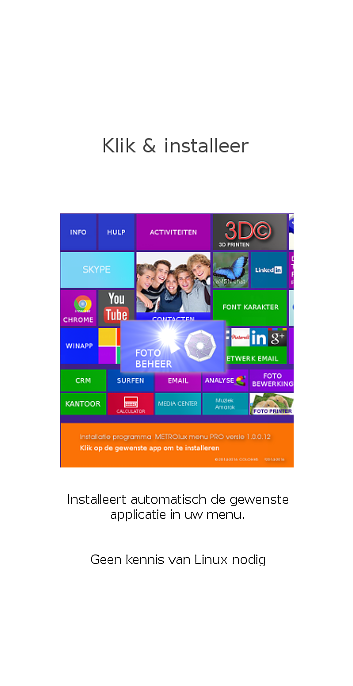

Versie 1.0.0.16 ©2014 A.Greven

Onze inzet en ons werk om de software voor iedereen toegankelijk te maken kan door u als partikulier en door bedrijven worden gesteund door aankoop van extra functionaliteiten,advertenties,en natuurlijk sponsoring.
Ook is het mogelijk in overleg reclame blokken te plaatsen die wij in onze menu's integreren voor bedrijven,clubs of vereningen.
Deze reklame blokken komen dan in dit document waarin een verwijzing naar uw website of een extra pagina.
Sponsors worden altijd geplaatst in de introductie en op een bijlage van dit informatie punt.
Adverteerders met afbeeldingen,logo's e.d. worden geselecteerd om de beperkte ruimte.
Een advertentie is heeft een levensduur van maximaal 1 jaar welke kan worden verlengd.
Fans kunnen ook met een kleine vergoeding onder €10,00 een link plaatsen door een bericht te sturen via de volgende link:
Meer informatie over een link met METROlux
Heeft u een andere vraag,neem dan contact op met dhr A.Greven telefoon +31(0)633962565 of stuur een mailbericht met uw vraag naar:
METROlux-beheer
Of bekijk de informatie en klik op:
Ik wil adverteren..
|
TIP
Het METROluxPRO menu (betaalde versie) is voorzien van software,waarmee wij of uw partner
hulp kunnen bieden en problemen direct online oplossen.
De performance van het menu is ons een groot goed en dit willen wij beschermen.
Hierom hebben is besloten een selectie te doen in reclame-middelen en dit niet te automatiseren.
EXTRA OPTIE METROlux menu:
Sectie 1.10.33 handleiding en tips. zijn niet beschikbaar in de gratis versie.
sectie 1.10.34 Extra installatie opties als set-up menu en automatische installer zijn niet beschikbaar in de gratis versie.
meer over het set-up menu vind u verder in dit document terug.
Direct naar deze fantastische installatie hulp?

MODULES METROluxPRO
sectie 1.10.35 Cursus Libreoffice Writer zijn niet beschikbaar in de gratis versie.
sectie 1.10.36 Cursus Libreoffice Calc zijn niet beschikbaar in de gratis versie.
sectie 1.10.36 Cursus Libreoffice Impress zijn niet beschikbaar in de gratis versie.
sectie 1.10.38 Cursus Libreoffice Draw zijn niet beschikbaar in de gratis versie.
sectie 1.10.39 Cloud voorzieningen zijn niet of beperkt beschikbaar in de gratis versie.
sectie 1.10.40 3D printing voorzieningen zijn beperkt beschikbaar in de gratis versie.
|
Koop nu de PRO Versie 1.0.0.16Maak met dit menu uw computer compleet.
Software voor professionals.
INTRODUCTIE PRIJS
Uw METROluxPRO menu inclusief de set-up functie is vanaf €19,50 per gebruiker leverbaar.
Voor scholen vanaf €29,- per 10 gebruikers.
Neem contact met mij op over METROluxPRO
|
Gebruik nu alle functies met de betaalde versie en maak kennis met de vele extras in uw menu als:
Uitgebreide gebruikers handleidingen tips met uitleg en handige links,Libre-office cursussen,tips en extra functies als cloud voorzieningen en 3D printing.
En meer modules die het gebruikers gemak en de snelheid van het menu verbeteren.
(niet of beperkt beschikbaar in de gratis versie.)
Meer informatie..
 Nu bestellen..
Nu bestellen..
Ik wil adverteren..
Ik wil sponsoren..
Voor aanpassingen en activeren van uw eigen tiles kunt u contact opnemen met:
dhr A.Greven telefoon +31(0)633962565 of stuur een mailbericht met uw vraag naar:
METROlux-beheer
Benodigde software:
Alle tiles die op het menu zichtbaar zijn zijn vooraf ingesteld om de bijbehorende applicaties te starten.
Indien er een applicatie niet start dan is deze niet op uw systeem geinstalleerd.
Om deze installatie automatisch te verzorgen kunt u de betaalde versie aankopen.
Deze versie is voorzien van een binaire installer en scripts om dit voor u te regelen.
|

|